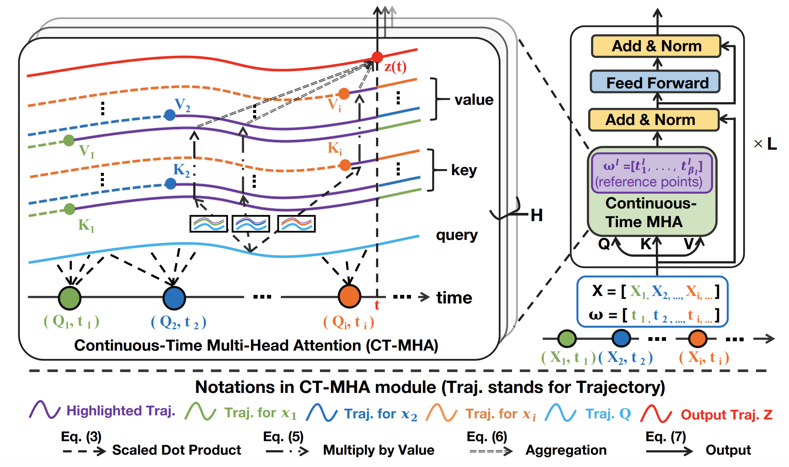
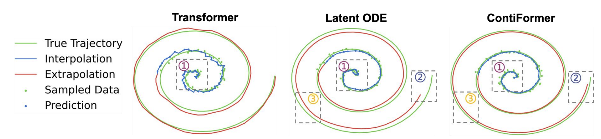
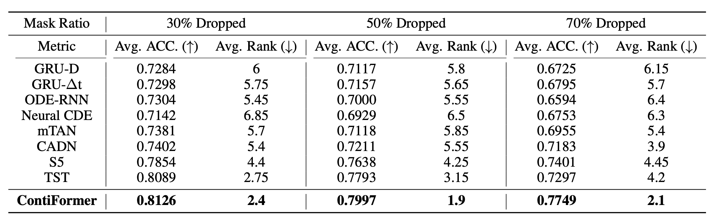
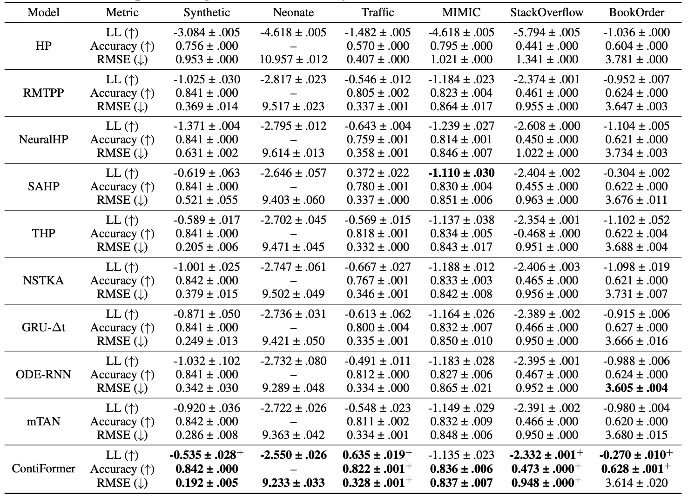

ContiFormer: Continuous-Time Transformer for Irregular Time Series Modeling
Arxiv: TBD
Code: https://github.com/microsoft/SeqML/tree/main/ContiFormer
Authors
- Yuqi Chen (Fudan University) cyuqi395@gmail.com
- Kan Ren (Microsoft Research Asia) renkan@shanghaitech.edu.cn
- Yansen Wang (Microsoft Research Asia) yansenwang@microsoft.com
- Yuchen Fang (Shanghai Jiao Tong University) arthur_fyc@sjtu.edu.cn
- Weiwei Sun (Fudan University) wwsun@fudan.edu.cn
- Dongsheng Li (Microsoft Research Asia) dongsli@microsoft.com
Abstract
Modeling continuous-time dynamics on irregular time series is critical to account for data evolution and correlations that occur continuously. The traditional methodologies including recurrent neural network or the Transformer model leverage inductive bias via powerful neural architectures to capture complex patterns. However, due to their discrete characteristic, they have limitations in generalizing to continuous-time data paradigm. Though Neural Ordinary Differential Equations (ODE) and their variants have shown promising results in dealing with irregular time series, they often fail to capture the intricate correlations within these sequences. It is challenging yet demanding to concurrently model the relationship between input data points and capture the dynamic changes of the continuous time system. To tackle this problem, we propose ContiFormer that extends the relation modeling of vanilla Transformer to continuous domain, which explicitly incorporates the modeling abilities of continuous dynamics of Neural ODE with the attention mechanism of Transformers. We mathematically characterize the expressive power of ContiFormer and illustrated that, by curated designs of function hypothesis, many Transformer variants specialized in irregular time series modeling can be covered as a special case of ContiFormer. A wide range of experiments on both synthetic and real-world datasets have illustrated the superior modeling capacities and prediction performance of ContiFormer on irregular time series data.
Model Overview
As illustrated in the above Figure, ContiFormer takes an irregular time series and its corresponding sampled time points as input. Queries, keys, and values are obtained in continuoustime form. The attention mechanism (CT-MHA) performs a scaled inner product in a continuous-time manner to capture the evolving relationship between observations, resulting in a complex continuous dynamic system. Feed forward and layer normalization are adopted, similar to the Transformer. Finally, a sampling trick is employed to make ContiFormer stackable. Note that the highlighted trajectories in purple indicate the part of functions that are involved in the calculation of the output.
Experiment Results
The first experiment studies the effectiveness of different models from different categories on continuous-time function approximation.
As shown in the above figure, both Neural ODE and ContiFormer can output a smooth and continuous function approximation, while Transformer fails to interpolate it given the noisy observations (①). Additionally, compared to Transformer, our ContiFormer can produce an "almost" continuous-time output, making it more suitable for modeling continuous-time functions. Second, compared to Latent ODE, our ContiFormer excels at retaining long-term information (②), leading to higher accuracy in extrapolating unseen time series. Conversely, Neural ODE is prone to cumulative errors (③), resulting in poorer performance in extrapolation tasks.
The second experiment evaluates our model on real-world irregular time series data. As shown in the figure below, ContiFormer outperforms all the baselines on all three settings.
The third experiment evaluates different models for predicting the type and occurrence time of the next event with irregular event sequences. As shown in the figure below, ContiFormer demonstrate the overall statistical superiority over the baseline models.
